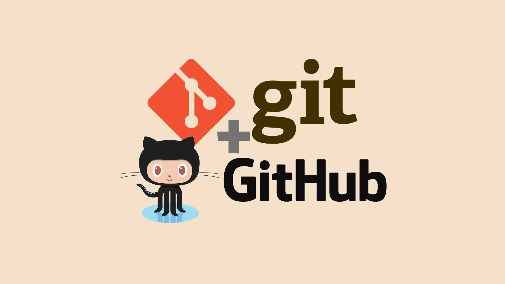

Por que você deveria ter uma conta no GitHub, se você está começando em Ciência de Dados

Você já ouviu falar de Git ou GitHub? Talvez alguém tenha dito que essas ferramentas são apenas para desenvolvedores de software e que, como cientista de dados, você não precisa se preocupar com isso. Se você é um engenheiro de software que migrou para a ciência de dados, Git e GitHub já são familiares. Mas se você está começando na área, vindo de outras áreas, ou mesmo se já é um cientista de dados experiente, este artigo é para você.
No final desta leitura, você entenderá por que Git e GitHub são tão importantes e como eles podem ser ferramentas valiosas em seus projetos de ciência de dados. Vamos começar!
O que é Git?
“Git é um sistema de controle de versão distribuído[9] projetado para rastrear alterações em arquivos ao longo do tempo. Ele é amplamente utilizado por desenvolvedores de software para gerenciar e colaborar em projetos de código-fonte, facilitando o trabalho em equipe e a manutenção de diferentes versões do código.” — Wikipédia
Git é uma ferramenta de linha de comando que permite rastrear mudanças em arquivos, criar versões do seu trabalho e colaborar com outras pessoas. Ele foi criado por Linus Torvalds, o mesmo criador do Linux, e é a base de muitas plataformas de colaboração, como o GitHub.
E o GitHub?
Enquanto Git é a ferramenta de controle de versão, GitHub é uma plataforma online que hospeda repositórios Git. Ele adiciona uma camada de colaboração e compartilhamento, permitindo que você armazene seus projetos na nuvem, compartilhe código com outras pessoas e contribua para projetos de código aberto.
Pense nisso assim:
- Git é o motor que faz o controle de versão funcionar.
- GitHub é a garagem onde você estaciona e compartilha seu carro (projeto).
Se você pensa que Git e GitHub são apenas para desenvolvedores, saiba que essas ferramentas são muito mais versáteis e podem ser usadas por qualquer profissional que trabalhe com arquivos digitais, incluindo cientistas de dados.
Por que Git e GitHub são importantes para Cientistas de Dados?
Imagine que você está trabalhando em um projeto de ciência de dados sozinho. Por que se preocupar com Git e GitHub? A resposta está na organização, no controle de versão e na colaboração.
Git é especialmente útil em ambientes que seguem metodologias ágeis, onde o controle de versão distribuído torna o fluxo de trabalho mais eficiente e adaptável a mudanças.
O que é controle de versão?
Controle de versão é um sistema que registra alterações em arquivos ao longo do tempo, permitindo que você recupere versões específicas quando necessário.
Por exemplo, imagine que você e outro cientista de dados estão trabalhando na mesma função para construir um modelo de machine learning. Se você fizer alterações e enviá-las para o repositório remoto no GitHub, o modelo pode se tornar a versão 1.1. Se o outro cientista fizer mais alterações, o modelo passa para a versão 1.2. Se algo der errado na versão 1.2, você pode facilmente voltar para a versão 1.1. Essa é a magia do controle de versão.
Como usar Git e GitHub sendo Cientista de Dados
Agora que você entende o que é Git e GitHub, a pergunta é: como usá-los no dia a dia?
Você não precisa ser um expert em Git para ser um bom cientista de dados. O segredo é entender o fluxo de trabalho básico. Não se preocupe em decorar todos os comandos — é normal consultar a documentação ou buscar ajuda online quando necessário.
Vou focar no Git Feature Branch Workflow, um fluxo comum em projetos de código aberto e comerciais. Esse fluxo assume um repositório central, onde a branch master ou main representa o histórico oficial do projeto.
Passo a passo do Git Feature Branch Workflow
Comece com a branch master e crie uma nova branch
Certifique-se de que sua branch local
masterestá atualizada com o repositório remoto no GitHub. Em seguida, crie uma nova branch para adicionar uma nova funcionalidade.
#| eval: false
#| include: false
git checkout master
git pull
git checkout -b branch-name Atualize, adicione, commit e envie suas alterações
Após fazer alterações, use
git statuspara verificar os arquivos modificados. Adicione os arquivos comgit add, faça um commit com uma mensagem descritiva e envie as alterações para o repositório remoto no GitHub.
#| eval: false
#| include: false
git status
git add <seus-arquivos>
git commit -m 'sua mensagem'
git push -u origin branch-name Crie um Pull Request e revise as alterações
No GitHub, crie um Pull Request para que sua equipe revise suas alterações antes de mesclá-las à branch
master. Se houver feedback, faça as alterações necessárias, commit e envie novamente.Resolva conflitos de merge (se houver)
Se outras pessoas fizeram alterações no mesmo código, pode haver conflitos de merge. Resolva esses conflitos antes de mesclar sua branch com a
master.
GitHub Pages: Hospedando seu site ou blog
Uma das funcionalidades mais poderosas do GitHub é o GitHub Pages, que permite hospedar websites diretamente de um repositório. Isso é ideal para criar portfólios, blogs ou até mesmo sites pessoais.
Por exemplo, este blog que você está lendo foi hospedado usando o GitHub Pages. Com ele, você pode transformar um repositório em um site estático, sem precisar de serviços de hospedagem externos. Basta configurar o repositório, adicionar seus arquivos HTML, CSS e JavaScript, e o GitHub cuida do resto.
Como usar o GitHub Pages
Crie um repositório no GitHub:
O repositório deve ter o nome
seu-usuario.github.io(substitua “seu-usuario” pelo seu nome de usuário no GitHub).Adicione seus arquivos de site:
Suba os arquivos HTML, CSS, JavaScript e outros recursos necessários para o repositório.
Ative o GitHub Pages:
Vá nas configurações do repositório, role até a seção “Pages” e selecione a branch que contém seus arquivos de site.
Acesse seu site:
Em alguns minutos, seu site estará disponível em
https://seu-usuario.github.io.
O GitHub Pages é uma maneira simples e gratuita de criar e hospedar sites, perfeito para quem quer mostrar seu trabalho ao mundo.
Facilitando o uso do Git com o GitHub Desktop
Se você é novo no Git ou prefere uma interface mais visual e amigável, o GitHub Desktop é uma excelente opção. Ele é uma aplicação gráfica que simplifica o uso do Git, permitindo que você gerencie repositórios, branches, commits e pull requests sem precisar digitar comandos no terminal.
Por que usar o GitHub Desktop?
Interface intuitiva: Ideal para quem está começando ou prefere uma abordagem visual.
Facilidade de uso: Você pode clonar repositórios, criar branches, fazer commits e sincronizar alterações com apenas alguns cliques.
Visualização clara: Veja o histórico de commits, alterações em arquivos e conflitos de merge de forma organizada.
Integração com GitHub: Facilita a criação de pull requests e a colaboração em projetos diretamente da interface.
Como começar com o GitHub Desktop
Instale o GitHub Desktop:
Baixe e instale o aplicativo a partir do site oficial do GitHub.
Conecte sua conta do GitHub:
Após a instalação, faça login com sua conta do GitHub para acessar seus repositórios.
Clone um repositório:
Escolha um repositório existente no GitHub e clone-o para sua máquina local.
Crie uma nova branch:
Use a interface para criar uma nova branch a partir da
mainoumaster.Faça commits e sincronize:
Após fazer alterações nos arquivos, adicione uma mensagem de commit e sincronize as alterações com o repositório remoto.
Crie um Pull Request:
Diretamente do GitHub Desktop, você pode criar um Pull Request para enviar suas alterações para revisão.
O GitHub Desktop é uma ferramenta poderosa para quem quer simplificar o uso do Git, especialmente para cientistas de dados que podem não ter experiência prévia com controle de versão.
Conclusão
Git e GitHub são ferramentas essenciais para qualquer profissional que trabalhe com dados, código ou projetos digitais. Eles não apenas ajudam a manter o controle das versões do seu trabalho, mas também facilitam a colaboração e o compartilhamento de projetos.
Se você está começando, não se preocupe em dominar tudo de uma vez. Comece com o básico, explore o GitHub Pages para hospedar seu site ou blog, e use o GitHub Desktop para uma experiência mais visual. Aos poucos, você se sentirá mais confortável com essas ferramentas.
Até a próxima! 😄